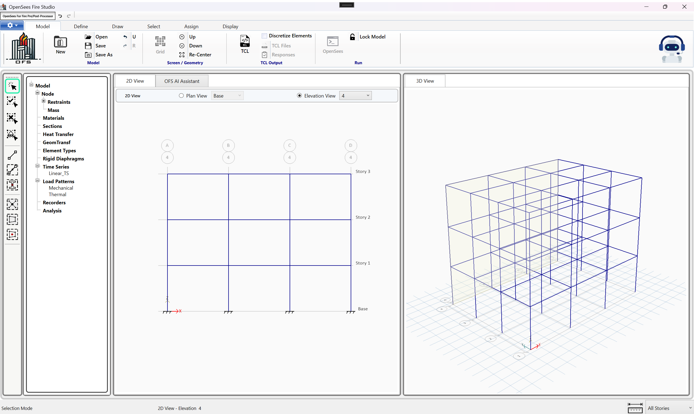
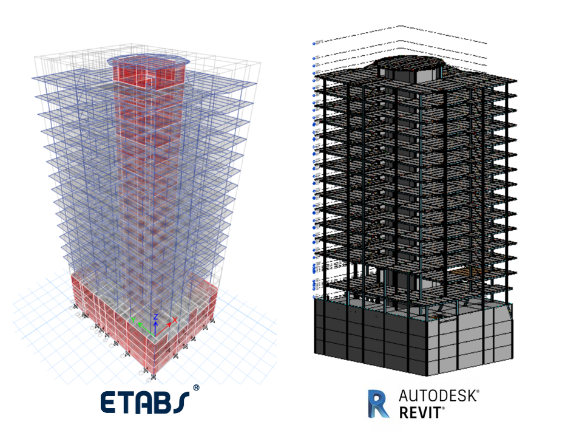
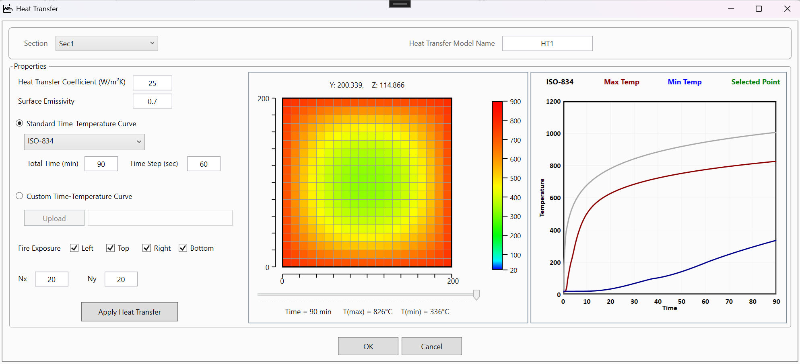
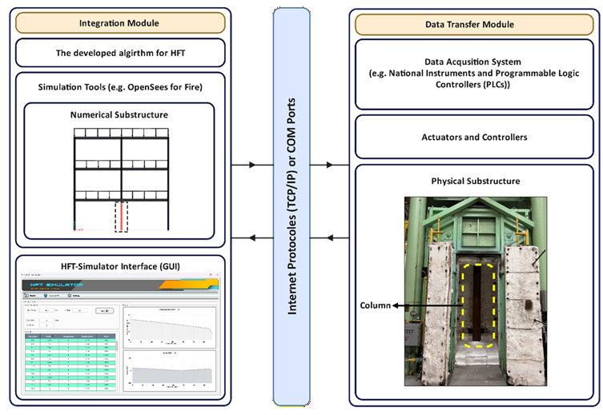
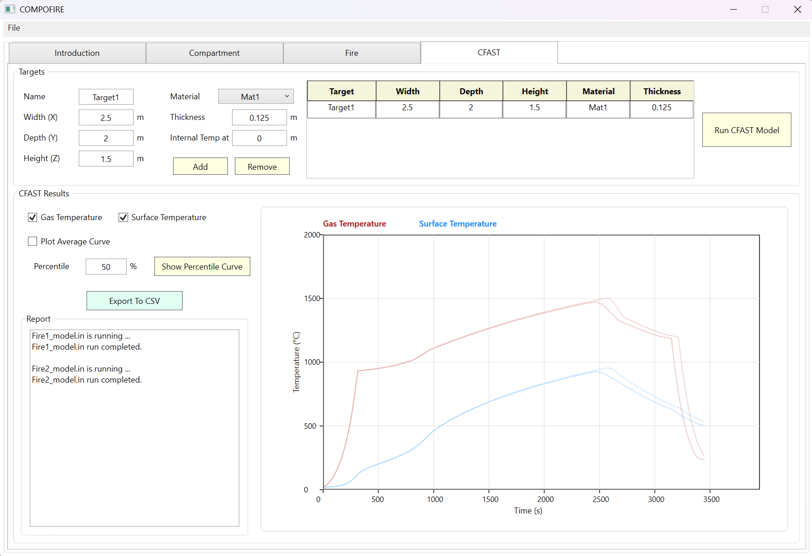
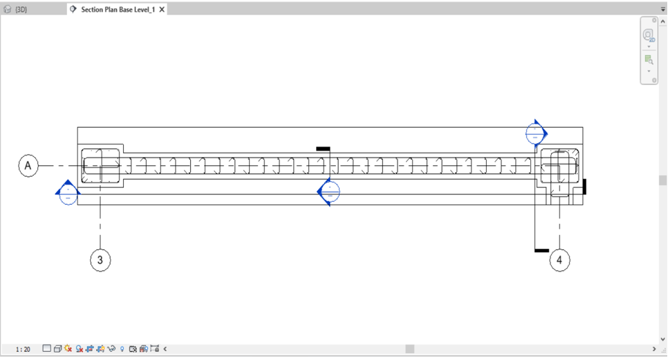
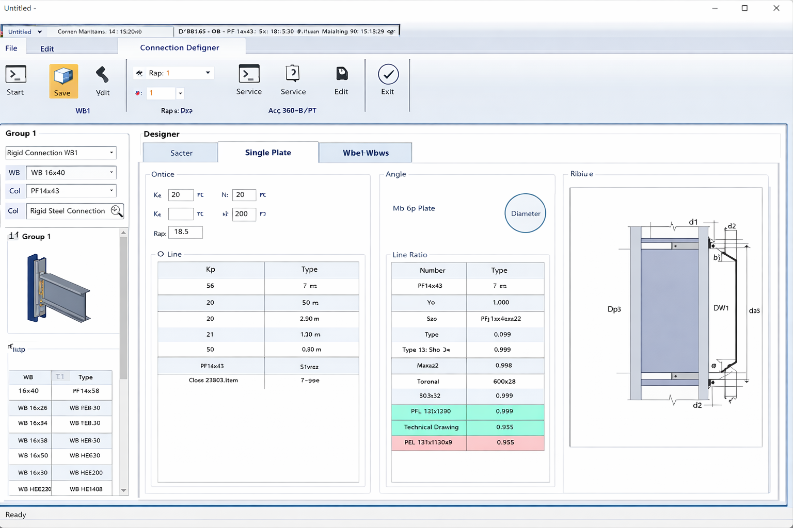
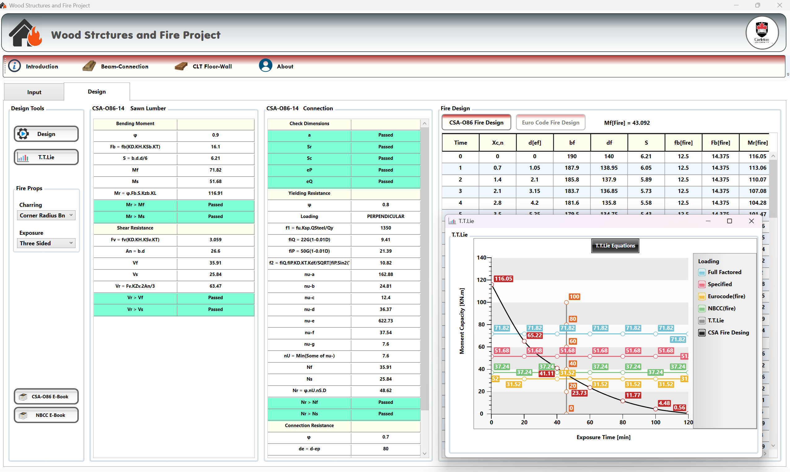
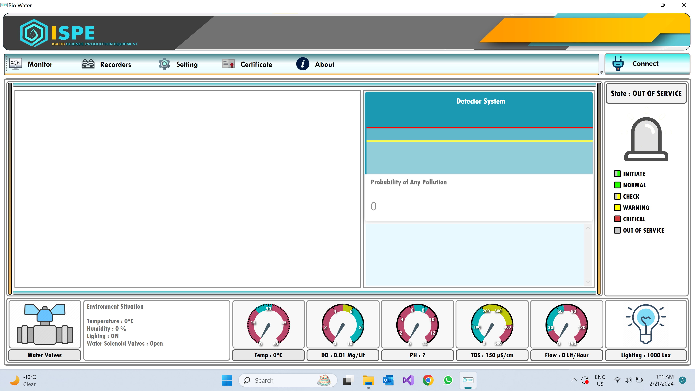

OpenSees Fire Studio

OpenSees Fire Studio is a graphical platform for structural fire analysis built on the OpenSees-for-Fire framework, designed to simplify modelling, simulation, and result interpretation. OFS replaces manual TCL scripting with an integrated environment for defining geometry, material behaviour, thermal conditions, and analysis workflows.
The software includes built-in heat transfer modelling, automated input generation, and post-processing tools such as axial, shear, and moment diagrams, along with deformed shape visualization. It also integrates an AI-based assistant to help identify modelling issues and support evaluation of analysis results.
ETABS to REVIT Workflow

E2R is a Revit plugin developed to streamline the transfer of structural models between CSI ETABS and Autodesk Revit. It enables engineers to convert analytical models from ETABS into detailed Revit models through a simple and efficient workflow.
The application is built in C# using both ETABS and Revit APIs, and is designed to support practical engineering use. It handles steel and concrete structures, accommodates a wide range of cross-sectional shapes, and maintains consistency between analysis and BIM environments.
By automating the model transfer process, E2R reduces manual modelling effort, improves accuracy, and accelerates the transition from analysis to detailed design.
Heat Transfer Solver

Heat Transfer Solver is a two-dimensional transient heat transfer solver developed for structural fire analysis, capable of computing temperature distributions in cross-sections under fire exposure. The software supports temperature-dependent material properties, convection and radiation boundary conditions, and automated mesh generation for complex geometries.
Built using a finite element formulation, the solver enables accurate thermal analysis of steel, concrete, and composite sections, and generates temperature–location data for coupling with structural models and further analysis through the OpenSees-for-Fire.
HFT Simulator

A software platform developed for hybrid fire testing (HFT), combining experimental and numerical analysis to simulate structural behaviour under fire conditions. The tool enables interaction between physical substructures and numerical models within a unified environment.
Developed in C#, the software addresses stability challenges by predicting stiffness changes of fire-exposed elements during testing, ensuring reliable and efficient convergence. It also provides a flexible communication framework using IP and COM protocols to connect with experimental control systems and finite element software.
The platform supports both virtual and experimental testing and has been validated through application to multi-story structural systems under fire conditions.
Compo-Fire

Compo-Fire is a software tool for generating realistic design fire scenarios based on experimental data from compartment fire tests. It produces HRR–time curves using a data-driven model and applies them to predict compartment temperature evolution.
The software enables rapid definition of compartment properties, fire characteristics, and ventilation conditions, and integrates directly with zone models to generate temperature–time histories for structural fire analysis and performance-based design.
REWALL

REWALL is a Revit plugin developed to simplify the design and detailing of reinforced concrete walls. The tool provides a structured environment for defining reinforcement layouts based on design code requirements and automates the generation of rebar drawings.
Developed in C# using the Revit API, REWALL integrates directly within the Revit environment and supports practical engineering workflows. By reducing manual drafting effort and standardizing reinforcement definition, it improves efficiency, accuracy, and consistency in structural design.
ETABS Assistant Designer

A structural design assistant that integrates with ETABS through its API to provide real-time interaction with analytical models. The tool offers control and validation features to ensure that structural models meet design code requirements.
Developed in C#, it extends ETABS capabilities by including additional design tools such as connection and base-plate design, which are not natively available. The software also generates comprehensive reports covering materials, structural elements, and component weights, supporting efficient design review and verification.
Wood Element in Fire Designer

A C#-based Windows application for the rapid design of timber structural elements under fire conditions. It provides simple and efficient tools for designing wood beams, connections, and CLT floors and walls through streamlined workflows.
The software is intended for quick evaluation of individual elements, combining a user-friendly interface with clear and practical design reports.
Bio-Aqua

Bio-Aqua is a C#-based software system for real-time water toxicity detection using AI-driven analysis of fish behaviour. The system monitors behavioural patterns to identify abnormal responses associated with toxic conditions.
It connects to field sensors through a PLC over TCP/IP, enabling continuous data acquisition and integration with monitoring hardware. Designed for high accuracy and reliability, Bio-Aqua reduces false alarms, improves sensitivity, and supports the detection of multiple types of toxic exposure.